원본 · 휴대폰
전체 화면 사진 위에 글이 겹쳐요
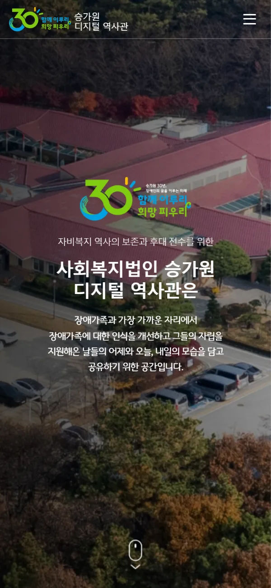
PC·태블릿·휴대폰에서 같은 내용이 각 화면에 맞게 바뀌어요.
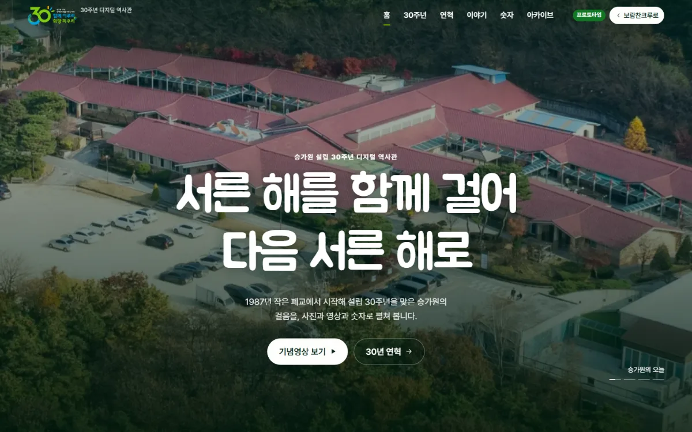
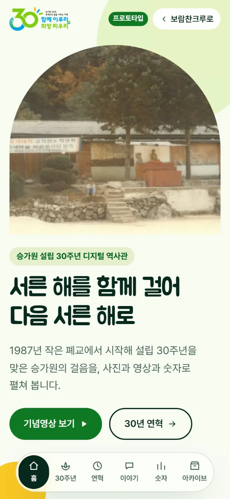
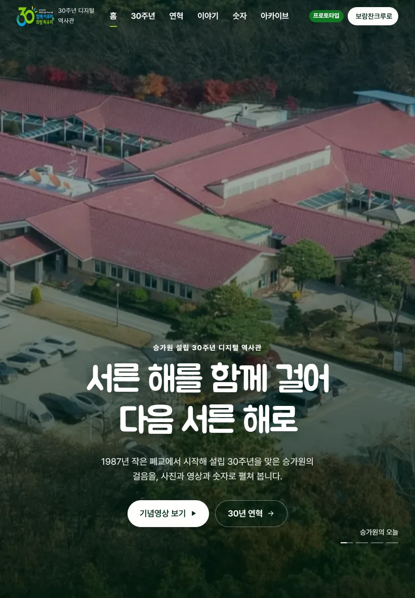
가운데 손잡이를 좌우로 끌어 보세요(키보드 ← → 도 됩니다). 왼쪽이 원본, 오른쪽이 프로토타입이에요.
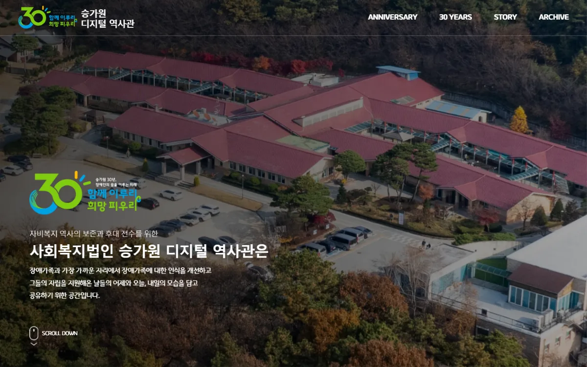
원본 프로토타입원본 · 휴대폰

프로토타입 · 휴대폰
같은 대통기획 역사관이라도 기관의 분위기에 맞게. KOGAS 프로토타입과 색·구성·움직임을 모두 다르게 잡았어요.
TONE
장애가족의 이야기를 담는 곳이라 차갑지 않게. 따뜻한 종이 바탕에 감 주황 하나를 강조색으로.
TYPE
Noto Serif KR(OFL) 제목으로 기록물의 무게를, 본문은 가독성 좋은 고딕으로.
FIRST VIEW
승가원의 사진 네 장이 세로 조각으로 열리며 바뀌어요. CSS만으로, 글은 아래에서 올라와요.
PEOPLE
부채꼴 이야기 카드, 세로 영상, 이사장스님 인터뷰를 접어 읽는 문답으로.
MOBILE
메뉴는 화면 아래 알약 독으로. 모든 쪽을 다섯 화면 폭에서 검사해 가로 넘침 0.
SPEED
유튜브를 미리보기 그림으로 두고 누를 때만 불러와 첫 화면이 빨라요.
메인과 다섯 메뉴, 모두 6쪽. 쪽마다 들어간 내용과 움직임이에요.
PAGE 01 · index.html
슬랫 열림장면 넘김알약 사진숫자 굴리기가로 레일가벼운 유튜브
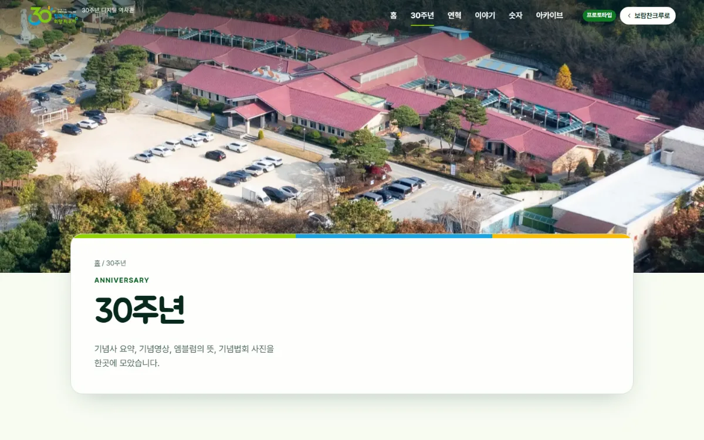
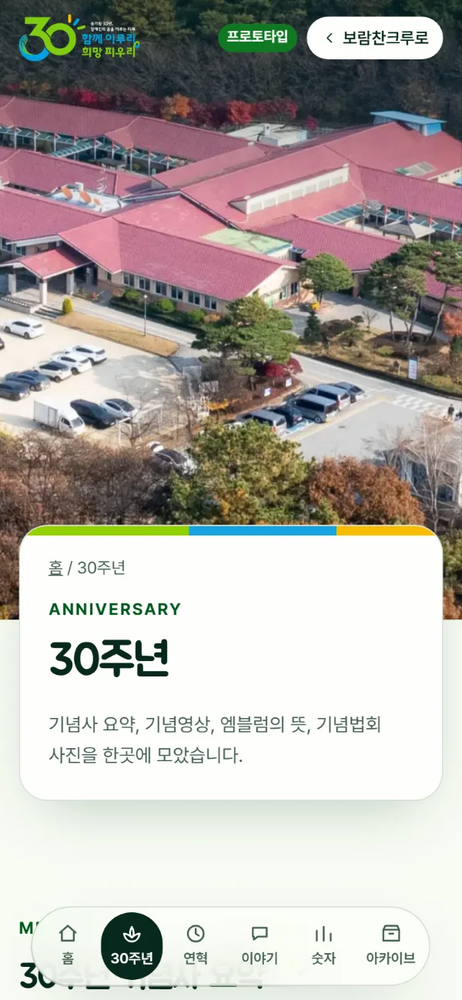
PAGE 02 · anniversary.html
편지지가벼운 유튜브모자이크크게 보기
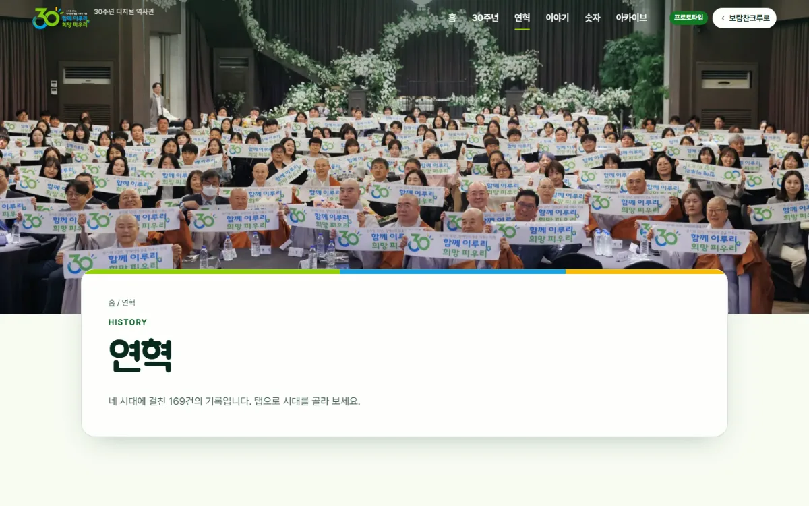
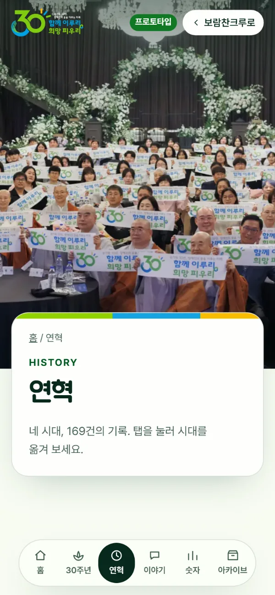
PAGE 03 · history.html
탭 패널지그재그 연표하나씩 떠오르기
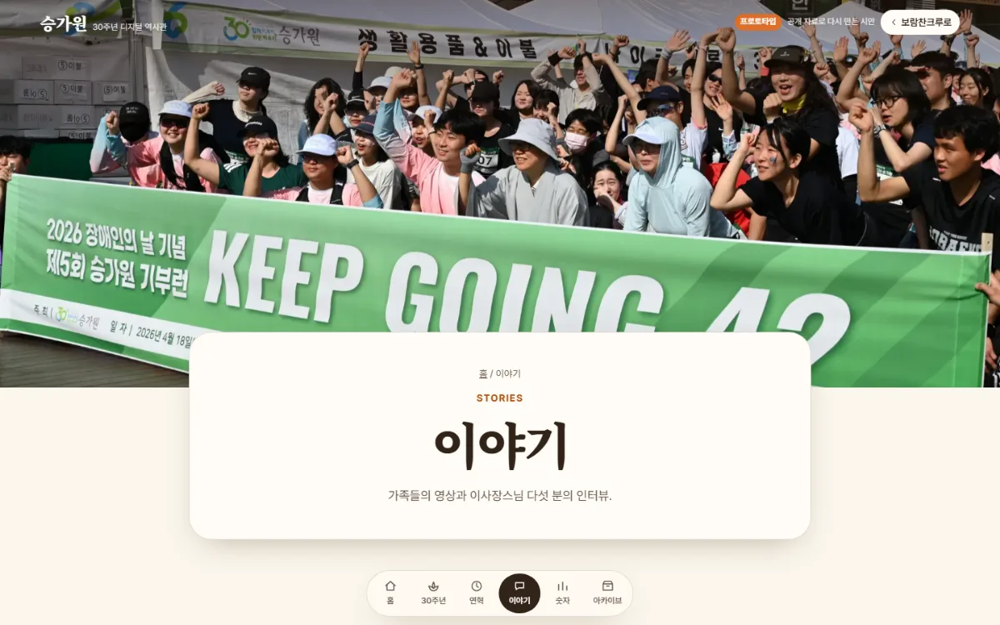
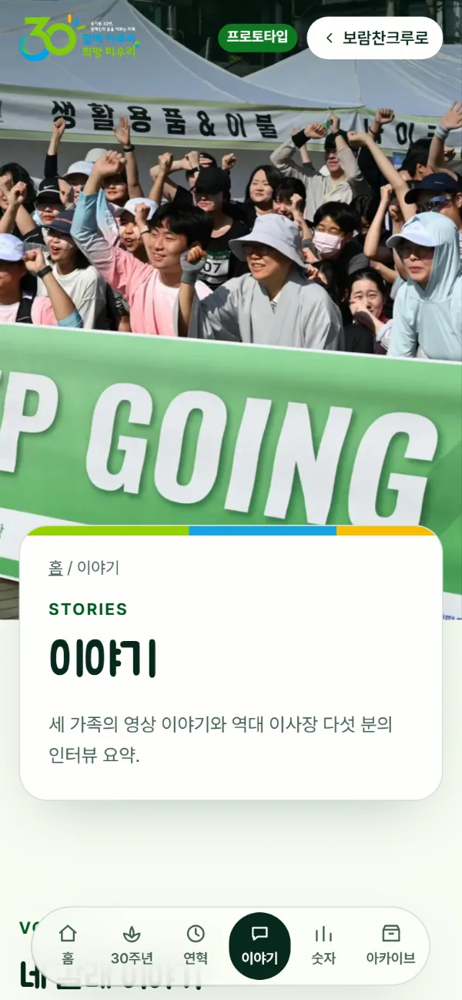
PAGE 04 · story.html
탭 안의 탭접이식 문답세로 영상
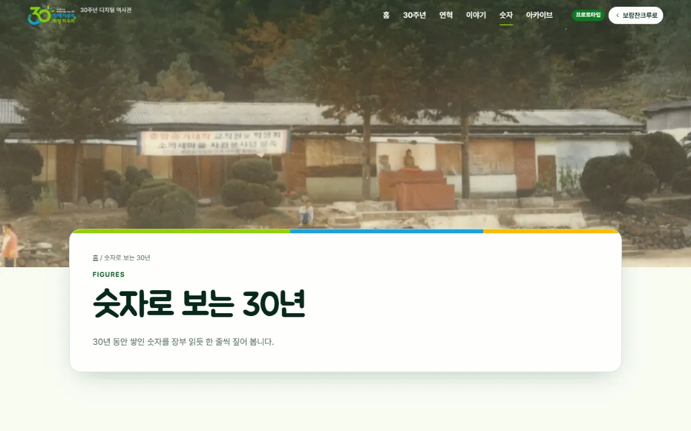
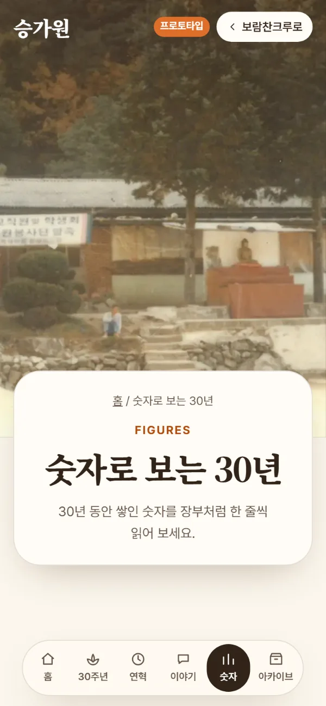
PAGE 05 · figures.html
숫자 장부숫자 굴리기동그라미 숫자
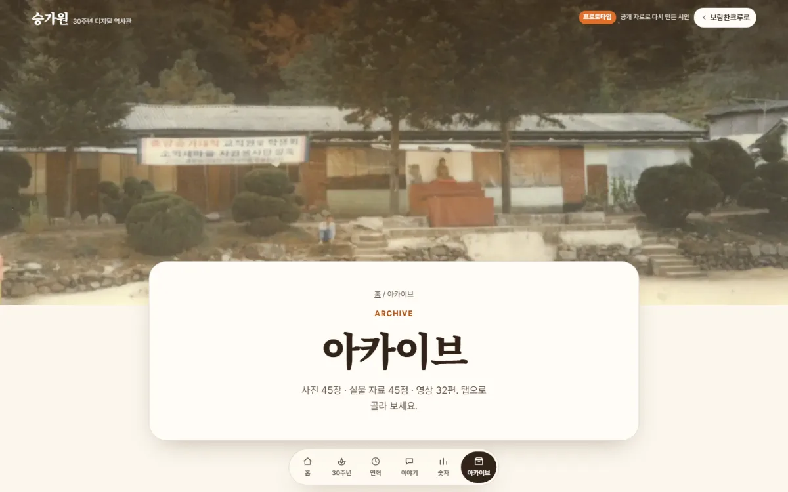
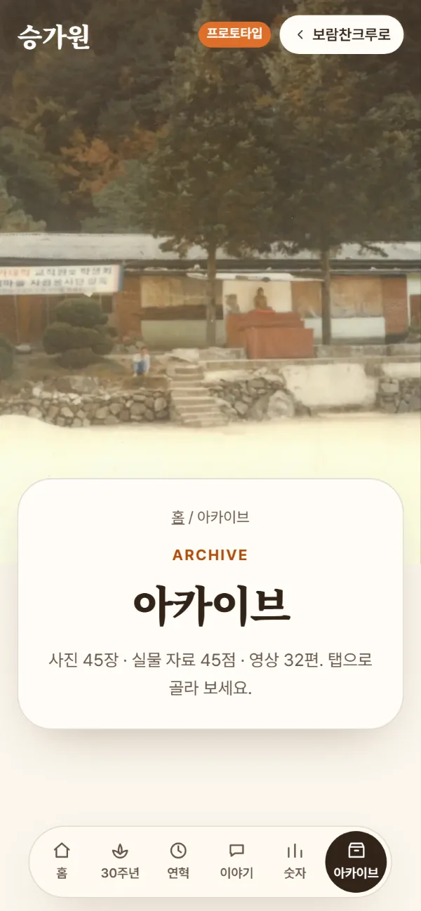
PAGE 06 · archive.html
탭 패널더 보기크게 보기가벼운 유튜브
보람찬크루 공통 컨벤션 그대로. 같은 부품 체계 위에 승가원 팔레트(--sg-*)를 입혔어요.